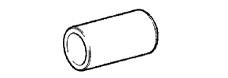
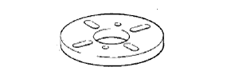
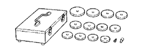
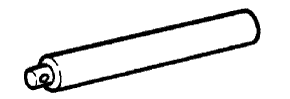

ディファレンシャル キャリヤASSY RR（4WD） 準備品 【組み付け】
|  | 09223-00010 | カバー ＆ シールリプレーサー |
| 09316-20011 | トランスファーベアリング リプレーサー | |
 | 09316-60011 | トランスミッション ＆ トランス ファーベアリングリプレーサー |
 | (09316-00011) | リプレーサーパイプ |
 | (09316-00051) | リプレーサーＤ |
 | 09330-00021 | コンパニオンフランジ ホールディングツール |
 | 09504-22011 | ディファレンシャルサイド ワッシャーリムーバー ＆ リプレーサー |
| 09506-35010 | ディファレンシャルドライブ ピニオンリヤベアリング リプレーサー | |
 | 09556-12010 | ドライブピニオンフロント ベアリングリムーバー |
| 09710-22042 | リヤサスペンションブシュ ツールセット | |
 | (09710-02051) | ベース |
 | 09950-30011 | プラ- Ａ セット |
 | (09951-03010) | アッパープレート |
 | (09953-03010) | センターボルト |
| (09954-03010) | アーム | |
|  | (09955-03030) | ロアープレート130 |
 | (09956-03020) | アダプター18 |
 | 09950-60010 | リプレーサーセット |
| (09951-00410) | リプレーサー 41 | |
 | (09951-00420) | リプレーサー 42 |
 | (09951-00610) | リプレーサー 61 |
|  | 09950-60020 | リプレーサーセットNo.２ |
 | (09951-00730) | リプレーサー 73 |
 | 09950-70010 | ハンドルセット |
|  | (09951-07150) | ハンドル 150 |
 | 09012-2C520 | ディープソケットレンチ 24mm |
 | 09031-00030 | ピンポンチ（φ３mm） |
| 09032-00020 | タガネ | |
 | 09051-1C110 | プラスティックハンマー |
 | 2046-08 | ダイヤルゲージ(10mm) (株)バンザイ扱い |
 | 25MB | マイクロメーター 測定範囲：0～25mm (株)バンザイ扱い |
| TMA-20 | 温度計 (株)バンザイ扱い | |
| M110-25 | マイクロメーター 測定範囲0～25mm (株)イヤサカ扱い |
| TH-10A | 温度計 (株)イヤサカ扱い | |
| TM-110 | ダイヤルゲージ(10mm) (株)イヤサカ扱い |
 | MB-B | マグネチックベース (株)バンザイ·(株)イヤサカ扱い |
 | QL-100N | QLトルクレンチ（100N) (株)バンザイ·(株)イヤサカ扱い |
| QL-280N | QLトルクレンチ（280N) (株)バンザイ·(株)イヤサカ扱い |
 | SF1.5N | F型トルクレンチ(1.5N·m） (株)バンザイ·(株)イヤサカ扱い |
| SF3N | F型トルクレンチ(3N·m） (株)バンザイ·(株)イヤサカ扱い |
 | XY-1 | レバー式測定子 (株)バンザイ·(株)イヤサカ扱い |
| トヨタ純正 ＭＰグリースNo.２ | ||
| トヨタ純正 ハイポイドギヤオイル ＳＸ | ||
| トヨタ純正 ハイポイドギヤオイル ＬＳＤ | ||
| 光明丹 | ||
| 鉄片 | ||
| 手袋 |